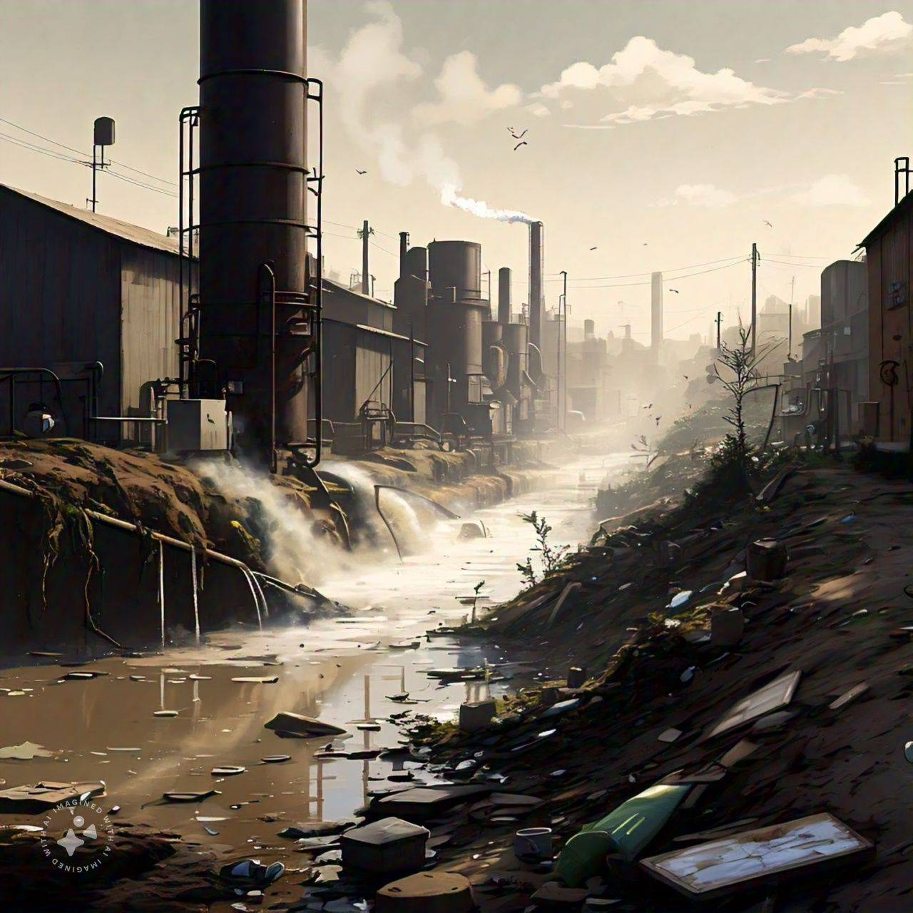

Click here to go to index
Water Pollution: A big problem*जल प्रदूषण कशामुळे होते?* अशा अनेक गोष्टी आहेत ज्यामुळे आपले पाणी प्रदूषित होऊ शकते, यासह: - *रसायने*: तेल, खते आणि कीटकनाशके जे मासे आणि इतर प्राण्यांना हानी पोहोचवू शकतात. - *कचरा*: प्लॅस्टिकच्या पिशव्या, बाटल्या आणि इतर कचरा जो प्राण्यांना गुदमरू शकतो किंवा अडकवू शकतो. - *सांडपाणी*: जसे आपल्या घरांचे आणि शाळांचे सांडपाणी जे रोग वाहून नेऊ शकते. *जल प्रदूषण कोठून होते?* जल प्रदूषण अनेक स्त्रोतांमधून येऊ शकते, यासह: - *कारखाने*: जे रसायने हवा आणि पाण्यात सोडतात. - *शेत*: जे खते आणि कीटकनाशके वापरतात जे जवळच्या जलमार्गात जाऊ शकतात. - *आमची घरे*: जेव्हा आपण कचरा किंवा रसायने नाल्यात किंवा जमिनीवर फेकतो. *जल प्रदूषणाचा आपल्यावर कसा परिणाम होतो?* जल प्रदूषण आपल्याला आजारी बनवू शकते आणि पर्यावरणाला हानी पोहोचवू शकते. हे करू शकते: - *आम्हाला आजारी करा*: कॉलरा किंवा टायफॉइड सारखे आजार देऊन. - *प्राण्यांना मारणे*: त्यांना विष देऊन किंवा त्यांची घरे नष्ट करून. - *पाणी पिण्यायोग्य बनवा*: त्यामुळे आम्ही ते पिण्यासाठी, पोहण्यासाठी किंवा मासेमारीसाठी वापरू शकत नाही. *आम्ही काय मदत करू शकतो?* जलप्रदूषण कमी करण्यासाठी आपण सर्वजण मदत करू शकतो: - *कमी करणे, पुन्हा वापरणे, पुनर्वापर करणे*: आमचा कचरा आणि कचरा. - *इको-फ्रेंडली उत्पादने वापरणे*: जी पर्यावरणासाठी सुरक्षित आहेत. - *पाणी वाचवणे*: दात घासताना नळ बंद करून किंवा कमी वेळात शॉवर घेऊन. - *इतरांना सांगणे*: आपले पाणी स्वच्छ ठेवण्याचे महत्त्व. लक्षात ठेवा, आपण करत असलेली प्रत्येक छोटी कृती आपले पाणी स्वच्छ आणि निरोगी ठेवण्यात मोठा फरक पडण्यास मदत करू शकते! |
 |